The mathematical expression for magnetic flux density was derived by Jean Baptiste Biot and Felix Savart. Talking the deflection of a compass needle as a measure of the intensity of a current, varying in magnitude and shape, the two scientists concluded that any electric current element projects into space a magnetic field, the magnetic flux density of which dB, is directly proportional to the length of the element dl, the electric current I, the sine of the angle and θ between direction of the electric current and the vector joining a given point of the field and the electric current element and is inversely proportional to the square of the distance of the given point from the electric current element, r. this is Biot Savart law statement.
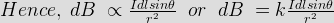
Where, K is a constant, depends upon the magnetic properties of the medium and system of the units employed. In SI system of unit,
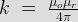
Therefore final Biot Savart law derivation is,
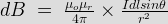
Let us consider a long wire carrying an electric current I and also consider a point p. The wire is presented in the below picture by red color. Let us also consider an infinitely small length of the wire dl at a distance r from the point P as shown. Here r is a distance vector which makes an angle θ with the direction of electric current in the infinitesimal portion of the wire.
If you try to visualize the condition, you can easily understand the magnetic field density at that point P due to that infinitesimal length dl of wire is directly proportional to electric current carried by this portion of the wire. That means electric current through this infinitesimal portion of the wire is increased the magnetic field density due to this infinitesimal length of wire, at point P increases proportionally and if the electric current through this portion of wire is decreased the magnetic field density at point P due to this infinitesimal length of wire decreases proportionally.
As the electric current through that infinitesimal length of wire is same as the electric current carried by the wire itself.
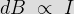
It is also very natural to think that the magnetic field density at that point P due to that infinitesimal length dl of wire is inversely proportional to the square of the straight distance from point P to center of dl. That means distance r of this infinitesimal portion of the wire is increased the magnetic field density due to this infinitesimal length of wire, at point P decreases and if the distance of this portion of wire from point P, is decreased, the magnetic field density at point P due to this infinitesimal length of wire increases accordingly.
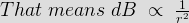
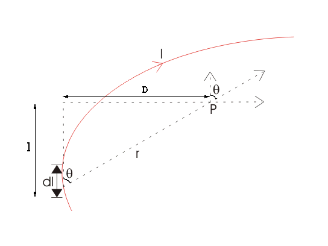
Lastly, field density at that point P due to that infinitesimal portion of wire is also directly proportional to the actual length of the infinitesimal length dl of wire. As θ be the angle between distance vector r and direction of electric current through this infinitesimal portion of the wire. The component of dl directly facing perpendicular to the point P is dlsinθ,

Now combining these three statements, we can write,
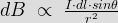
This is the basic form of Biot Savart's Law
Now putting the value of constant k (which we have already introduced at the beginning of this article) in the above expression, we get
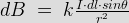

Here, μ0 used in the expression of constant k is absolute permeability of air or vacuum and it's value is 4π10-7 Wb/ A-m in S.I system of units. μr of the expression of constant k is relative permeability of the medium.
Now, flux density(B) at the point P due to total length of the electric current carrying conductor or wire can be represented as,
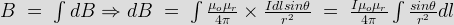
If D is the perpendicular distance of the point P form the wire, then
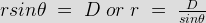
Now, the expression of flux density B at point P can be rewritten as,
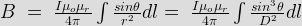
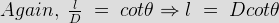
As per the figure above,
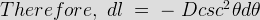
Finally the expression of B comes as,
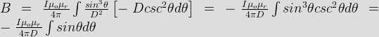
This angle θ depends upon the length of the wire and the position of the point P. Say for certain limited length of the wire, angle θ as indicated in the figure above varies from θ1 to θ2. Hence, flux density at point P due to total length of the conductor is,
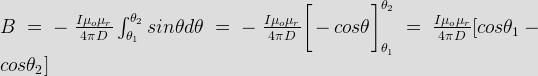
Let's imagine the wire is infinitely long, then θ will vary from 0 to π that is θ1 = 0 to θ2 = π. Putting these two values in the above final expression of Biot Savart law, we get,
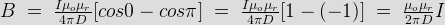
 by
by